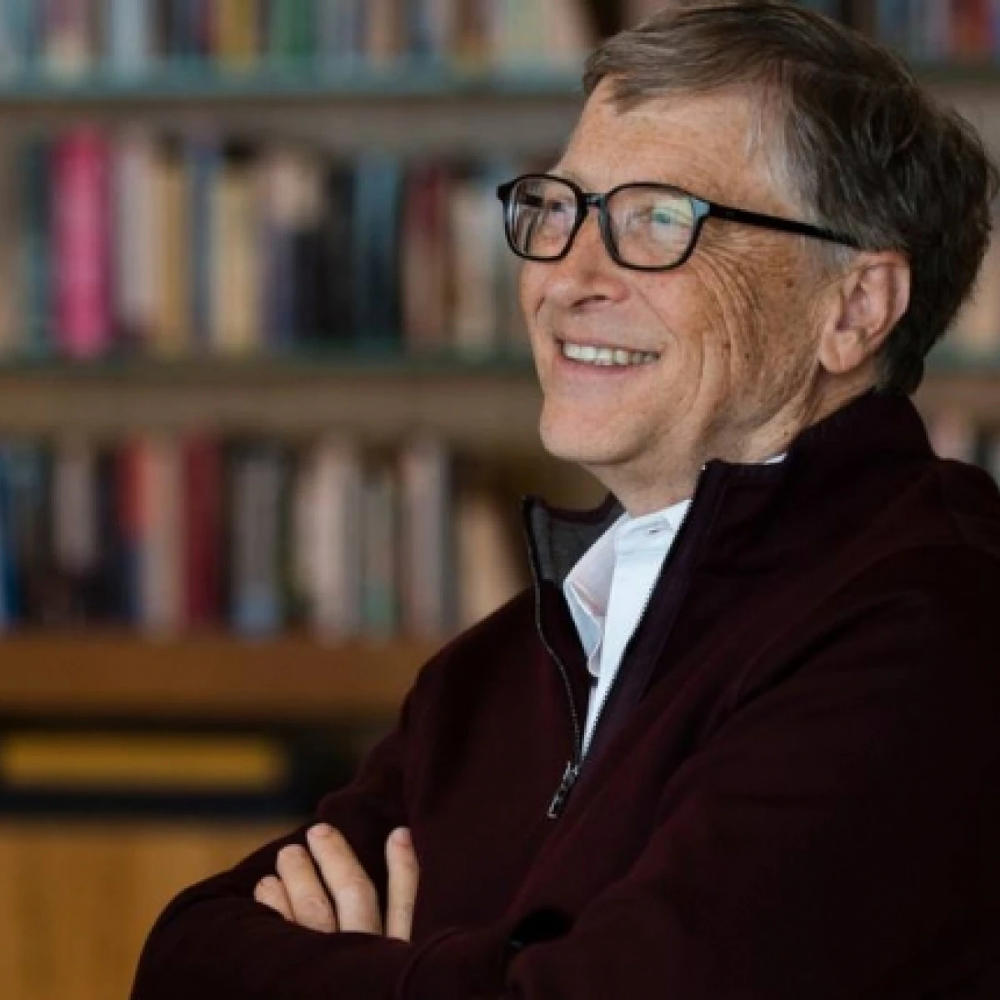

Fundador da Microsoft

William Henry Gates III KBE. GCIH (Seattle, 28 de outubro de 1955), mais conhecido como Bill Gates, é um magnata, empresário, diretor executivo, investidor, filantropo e autor americano, que ficou conhecido por fundar, junto com Paul Allen a Microsoft, a maior e mais conhecida empresa de software do mundo em termos de valor de mercado.
Gates ocupa atualmente o cargo de presidente não-executivo da Microsoft, além de ser classificado regularmente como a pessoa mais rica do mundo, posição ocupada por ele de 1995 a 2007, 2009, e de 2014 a 2017. É um dos pioneiros na revolução do computador pessoal.